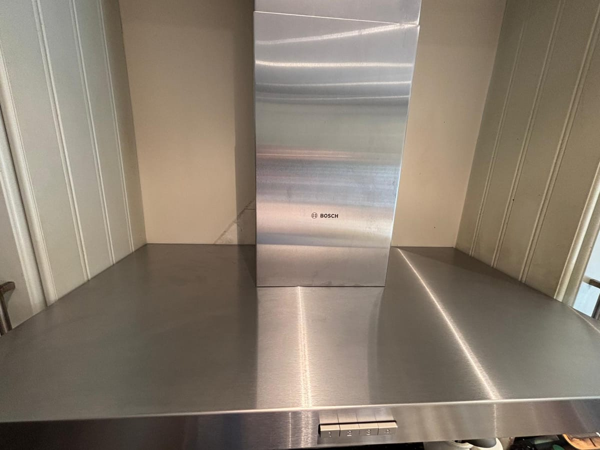
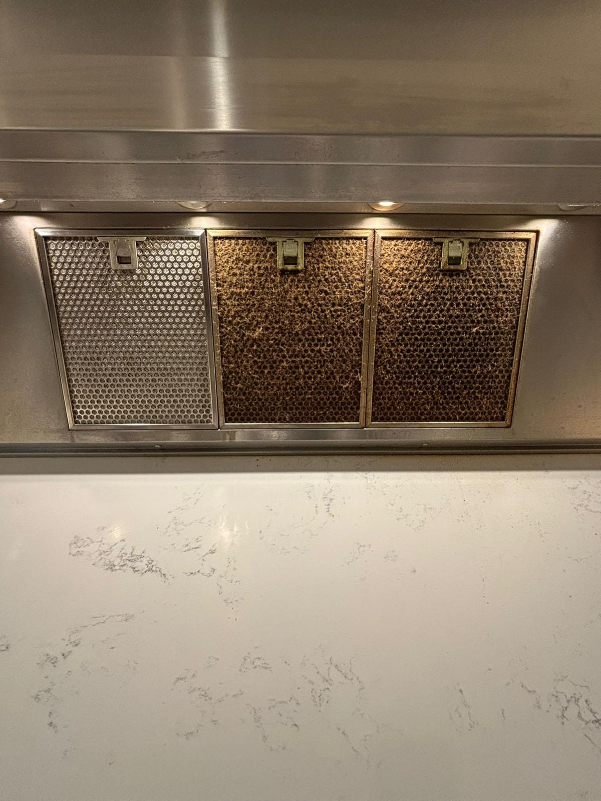
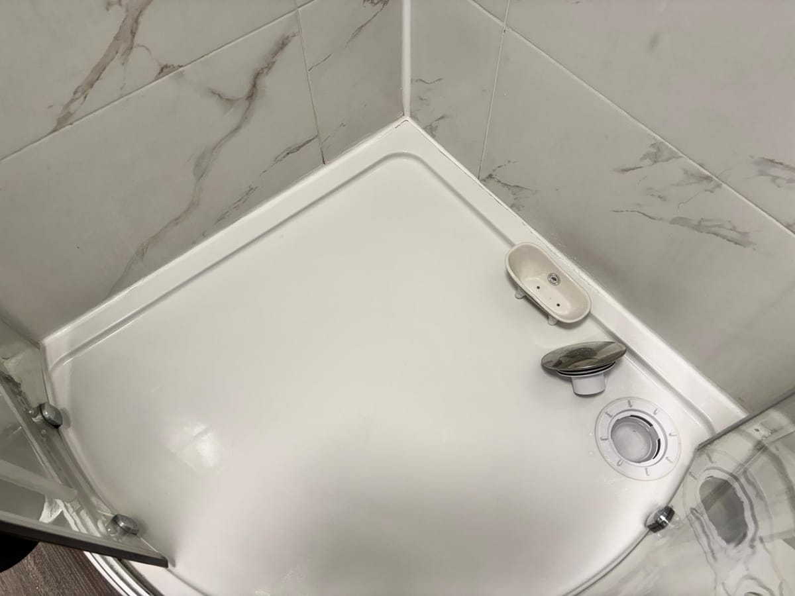
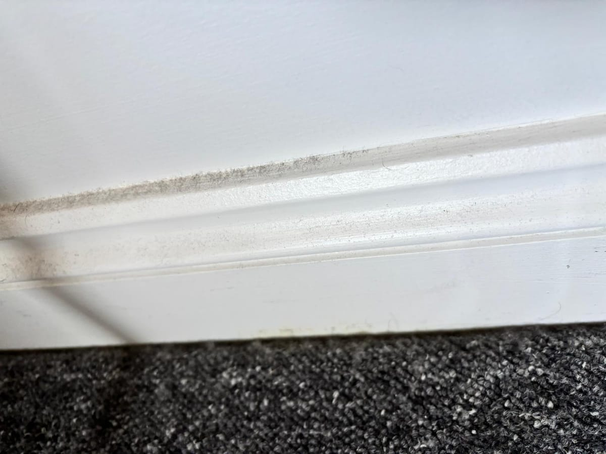

Przed sprzedażą, po przeprowadzce lub gdy dawno nie było sprzątane
Jednorazowe sprzątanie gruntowne w Wimbledonie
Sprzątanie gruntowne przywraca porządek w domu, który potrzebuje czegoś więcej niż zwykłego sprzątania. Sięga do tłuszczu, kamienia i kurzu, które zbierają się miesiącami, i do miejsc, do których nie dociera cotygodniowe sprzątanie.
Prawie 15 lat doświadczenia · Zaświadczenie DBS · Własne środki i sprzęt

Kiedy warto zamówić sprzątanie gruntowne
-
Przed sprzedażą lub wynajmem
Czysty dom lepiej wygląda na zdjęciach i robi lepsze wrażenie podczas oglądania.
-
Po wprowadzeniu się
Zacznij od nowa w domu, w którym mieszkał ktoś inny.
-
Gdy sprzątanie zostało zaniedbane
Po intensywnych miesiącach, chorobie albo narodzinach dziecka, gdy na sprzątanie brakowało czasu.
-
Przed regularnym sprzątaniem
Doprowadź dom do porządku, żeby cotygodniowe lub co dwutygodniowe wizyty mogły go w nim utrzymać.
-
Małe lokale usługowe
Salony, małe biura i mieszkania na wynajem krótkoterminowy, a nie tylko domy.
Sprzątanie gruntowne czy regularne?
Oba są wyceniane indywidualnie. Różnica polega na tym, jak głęboko każde z nich sięga w szczegóły.
| Jednorazowe sprzątanie gruntowne | Regularne sprzątanie | |
|---|---|---|
| Najlepsze dla | Domów, które dawno nie były dokładnie sprzątane | Utrzymania porządku na co dzień |
| Jak często | Raz lub od czasu do czasu | Co tydzień lub co dwa tygodnie |
| Kuchnia i łazienki | Dokładne usuwanie tłuszczu i kamienia | Utrzymywane w czystości od wizyty do wizyty |
| Listwy, drzwi i włączniki | Czyszczone w całym domu | Zgodnie z ustalonym planem sprzątania |
| Czas wizyty | Szacowany w wycenie | Od 2 godzin |
Szukasz stałych wizyt? Zobacz regularne sprzątanie.
Na co idzie najwięcej czasu
Większość czasu przy sprzątaniu gruntownym zajmuje kilka prac, które narastają powoli.
-

Tłuszcz w kuchni
Filtry okapu, panele nad blatem i fronty szafek. Filtry są namaczane i odtłuszczane, a nie tylko przecierane.
-

Kamień w łazience
Brodziki, szklane kabiny, baterie i płytki, odkamienione środkami na bazie naturalnych składników.
-

Kurz na krawędziach
Listwy przypodłogowe, ościeżnice i włączniki, na których zbiera się kurz omijany przez odkurzacz.
Do sprzątania gruntownego można dodać czyszczenie wnętrza piekarnika, lodówki lub zamrażarki, czyszczenie dywanów i wywóz śmieci, w miarę dostępności i z osobną wyceną.
Pytania o sprzątanie gruntowne
Masz inne pytanie? Napisz do Renaty na WhatsAppie lub zadzwoń.
Ile trwa sprzątanie gruntowne?
To zależy od wielkości i stanu nieruchomości, dlatego szacowany czas podamy razem z wyceną.
Czy przynosisz własne środki?
Tak. Renata przynosi własne środki i sprzęt, w tym środki zawierające składniki pochodzenia naturalnego, dobrane z myślą o domach, w których mieszkają ludzie i zwierzęta. Przed sprzątaniem daj znać o alergiach lub nadwrażliwościach.
Czy możesz gruntownie posprzątać salon lub małe biuro?
Tak. Małe lokale, takie jak salony, małe biura i mieszkania na wynajem krótkoterminowy, również mogą być gruntownie sprzątane. Opisz lokal i to, jak jest używany, a Renata przygotuje wycenę.